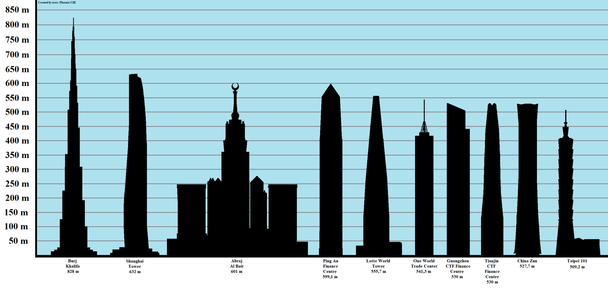

| Strona Główna | |||||
| Zjednoczone Emiraty Arabskie | Chiny | Malezja | Stany Zjednoczone | Singapur | experimental |
| Kontakt |
Największe budynki świata
Wieżowiec to stosunkowo wysoki nadziemny budynek wolno stojący posiadający
fundamenty i dach, w którym przynajmniej 50 procent jego wysokości jest wykorzystana na piętra użytkowe.
To kryterium odróżnia drapacze chmur od różnego rodzaju wolno stojących wież telewizyjnych (w których piętra
użytkowe to jedynie galerie widokowe i restauracje) i kominów (pojęcie piętra tu nie występuje).

Najwyższe budynki świata(2020)
Każda podstrona z menu poświęcona jest kilku budynkom z wybranych krajów świata.